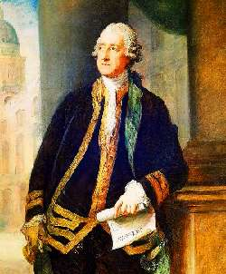

Борис Акунин
Мой календарь
Подобного рода самоаналитическую встряску полезно устраивать себе периодически: совпадает ли мое представление о себе с тем, чем я являюсь на самом деле, и с тем, как меня воспринимают окружающие.
Сегодня подобные рефлексии будут особенно уместны, поскольку это день памяти человека, который думал, что войдет в историю в одном качестве, а вошел совсем в другом.
30 апреля 1792 года ушел из жизни к большой посмертной славе Джон Монтегю, крупный политический деятель и первый лорд адмиралтейства, блестящий парламентский оратор, и прочая и прочая. В честь великого человека еще при его жизни даже назвали архипелаг, открытый капитаном Куком.
Но свое имя Джон увековечил не этим. Он был азартный игрок и долгие часы проводил за карточным столом, даже не прерываясь на еду. Когда подводило живот, подавал знак слуге, и тот подавал кусок мяса, положенный между ломтями хлеба, чтоб не испачкать карты жирными пальцами. Другие игроки требовали: «Мне то же, что Сэндвичу!». (Монтегю носил титул графа Сэндвича). Ну и кто сегодня помнит, какие посты занимал Сэндвич и кем он себя мнил?
Наполеон, в конце концов, не только слоеный торт, а Шатобриан не только мясное блюдо, но вот министр и большой вельможа Александр Строганов (1795–1891) - всего лишь бефстроганов, и с этим уже ничего не поделаешь.
Не считайте себя первым лордом адмиралтейства, если вы на самом деле бутерброд. И уже тем более не ошибитесь в противоположную сторону.